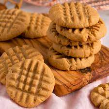

Peanut Butter Cookies

Here is what you will need
Ingredients
- 1 cup peanut butter
- 1 cup white sugar
- 1 egg
Steps
- Preheat oven to 350 degrees F (175 degrees C). Line baking sheets with parchment paper.
- Combine the peanut butter, white sugar and egg. Mix until smooth.
- Drop spoonfuls of dough onto the prepared baking sheet. Bake at 350 degrees F (175 degrees C) for 6 to 8 minutes. Do not overbake! These cookies are best when they are still soft and just barely brown on the bottoms.